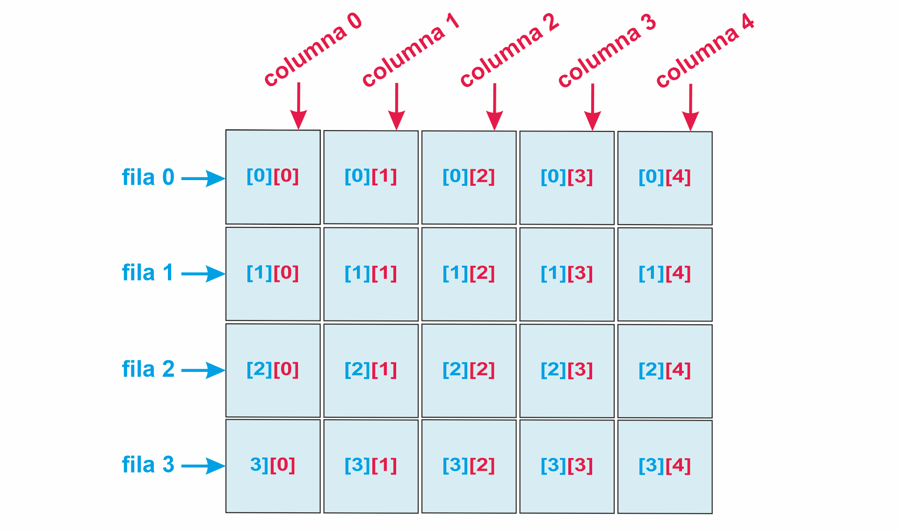
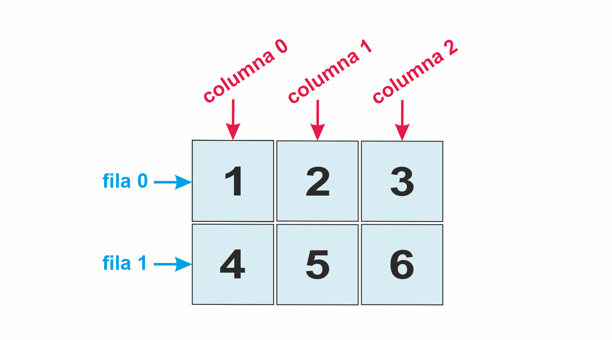
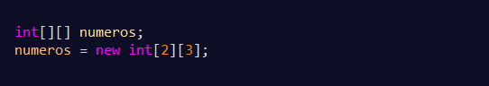
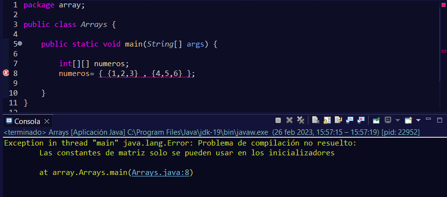
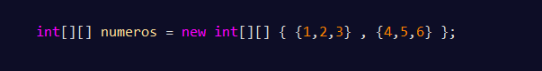
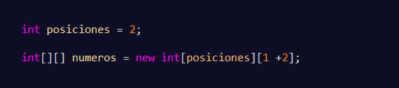
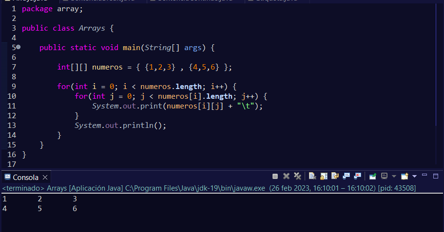
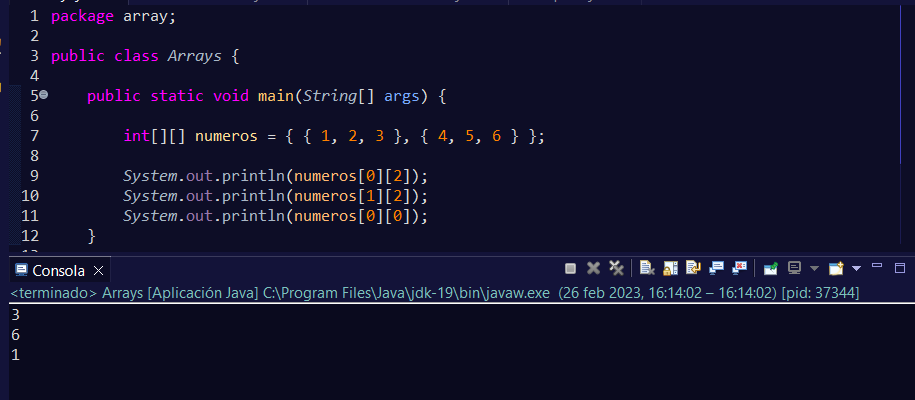
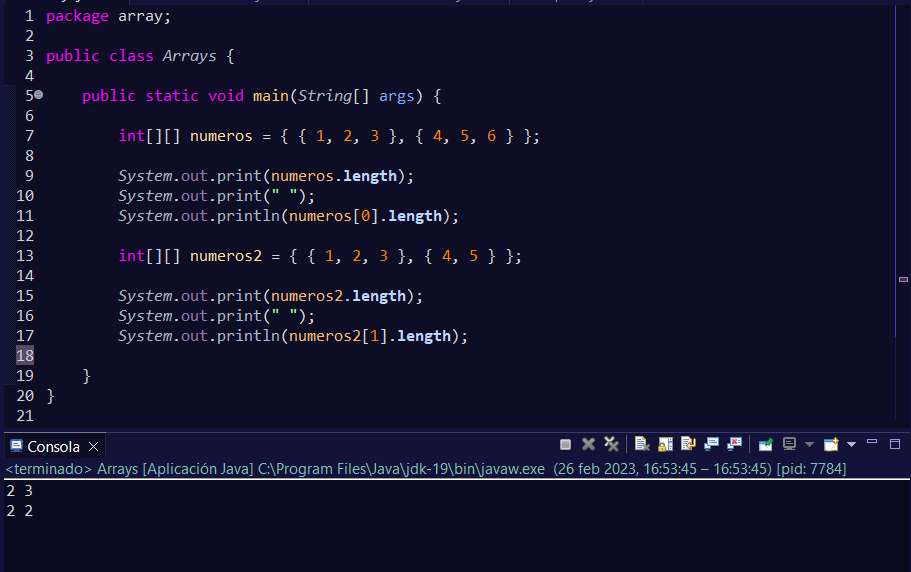

Los arrays bidimensionales son estructuras de datos que contienen uno o más arrays de una sola dimensión como el que se vio con anterioridad.
Normalmente, se utilizan para crear tablas donde el primer índice nos representará la fila en la que estamos ubicados y el segundo índice, la columna.
La forma de declarar los arrays es la misma que vimos anteriormente con los arrays sencillos, salvo que en vez de indicar un operador de índice, son dos.
También se genera el error al no inicializarse, ya que los arrays tienen unas posiciones de índice fijas como ya se vio.
Entonces para inicializar nuestros arrays, tenemos los mismos mecanismos que cuando lo hacíamos con los arrays unidimensionales, con la leve modificación de esa doble dimensión.
Mediante declaración implícita:
Las primeras llaves será el índice primero del array, el que corresponde a las filas. En su interior, se muestran arrays unidimensionales, es decir el índice segundo del array.
Gráficamente tendríamos:
Declarando primero el array e inicializándolo después:
Este ejemplo crea las mismas filas y columnas que el ejemplo anterior pero sin introducir valores en su interior.
Y tampoco se puede inicializar en otra línea una declaración implícita:
Declaración e inicialización explícita con valores iniciales
De forma explícita determinando el tamaño del array de otras formas.
como podemos ver, en el primer índice hemos introducido el valor de una variable, mientras que en el otro índice una operación.
Para recorrer un array desde el principio al final, podremos utilizar un bucle for:
con el primer bucle, se recorrerán las filas, mientras que el segundo bucle, será el encargado de recorrer las columnas.
Si quisiéramos encontrar un elemento concreto, nos bastaría con indicar la posición de la fila y la posición de la columna de éste.
Con array.length, podremos ver la primera dimensión, es decir, el número de filas. Si quisiéramos ver las columnas, tendremos que acceder escribiendo nombre_matriz[0].length, así podríamos ver las columnas que tiene la primera fila.
Si por casualidad nuestra matriz fuera irregular y no tuviera el mismo número de columnas, se nos indicará el número de columnas que contiene, pero internamente los valores en los que no hay asignado ningún dato, se almacenaría el valor por defecto según el tipo de dato (0 para numéricos, null para objetos y false para booleanos).
